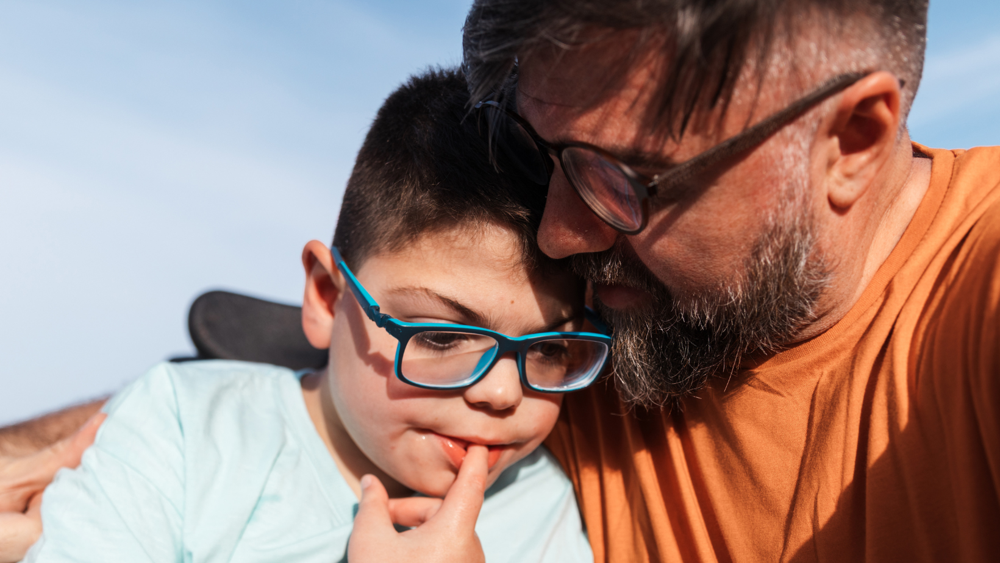
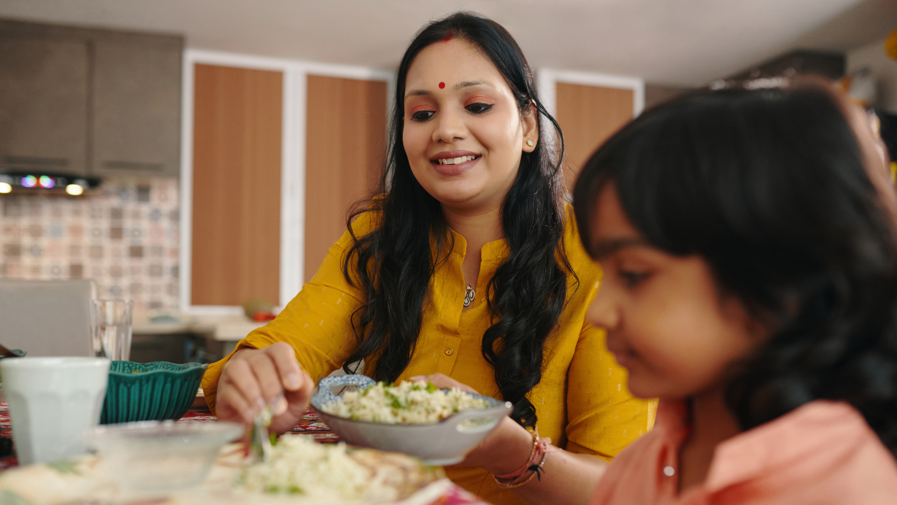

If you've just been told your child needs support — and you don't know where to start — this is where you start.
Project Inclusion Parent Assistant Tool closes that gap: a specialist-reviewed monthly home plan built for your child, direct access to Sri Aurobindo Society (SAS) specialists at nominal cost, and measurable progress markers at every stage.
Most parents come to PAT after a teacher raises a concern or a school assessment — informed that something needs attention, but without a clear path forward. PAT provides that path.
Start with Project Inclusion's short online learning module — a self-paced guide that explains learning differences in plain language: what they look like at home, what they don't mean, and what support actually involves. Takes 20–30 minutes. No prior knowledge needed.
The parent uses Project Inclusion's screening tool — a structured, guided process to identify the specific areas where the child needs support. No prior knowledge required.
The screening generates a detailed report: a clear picture of where the child is, what is presenting as a challenge, and what categories of support are indicated.
The report is reviewed by a specialist and fed into PAT, which generates a monthly home plan — five targeted activities, built around the child's specific profile, with progress markers the parent can observe and track.
Every monthly home plan is built around the child's specific area of focus — reading and writing, attention and focus, motor development, speech clarity, social communication — with five targeted activities, ten to twenty minutes each, three to five times a week, using materials available at home.
Each plan includes observable progress markers: what to look for, what to listen for, and how to track progress month on month. All plans are reviewed by a specialist before delivery.
Get Your Home PlanProject Inclusion was built in 2016 to close one of India's most persistent gaps in education: the near-absence of structured support for children with learning differences. Not a pilot — a programme that has been running, scaling, and learning across 32 states for nearly a decade.
Six Mother's Grace Centres of Excellence across Chandigarh, Delhi, Tirupati, Mumbai, Ghaziabad, and Dehradun. A dedicated app for teachers, a national LMS for inclusive education training, and a specialist network built over nearly a decade.
PAT brings this infrastructure directly to families — the parents who received a report and needed someone to translate it into action.
Reading, writing, and academic skill development. Each engagement begins with a thorough understanding of where the child is — and builds forward from there.
Behaviour, anxiety, social skills, and formal assessment. For children who are working through something that needs to be named clearly before it can be addressed.
Fine motor skills, sensory processing, and daily living skills — the foundational capacities that make independence possible.
Speech clarity, language development, and functional communication. Consistent, practical, and tailored to each child.

My child would not make eye contact. After 8 months, they started to.
Mother · Child aged 9 · DelhiShe used to pull away when I hugged her. Now she comes and sits next to me on her own. I did not expect that to change. It did.
Mother · Child aged 6 · ChandigarhHe has one teacher he trusts completely now. Getting to school used to be a battle every morning. It still takes time, but he goes — because he knows she is there.
Father · Child aged 11 · MumbaiWe have a routine now. He knows what comes next, and that has changed everything — for him and for me.
Mother · Child aged 8 · DehradunProject Inclusion works with the bodies that govern standards for inclusion work in India — and is embedded in school systems that reach every kind of family.
The infrastructure is real, the partnerships are institutional, and the reach is national.
On the ground since 2016Families whose children are flagged with learning differences typically receive an assessment report — and nothing beyond it. No home plan, no accessible specialist, no actionable next step. PAT is that next step: built on Project Inclusion's infrastructure, backed by nearly a decade of on-ground execution across 32 states, and structured at nominal cost so that access is substantive, not aspirational.
Your partnership directly scales the number of families who move from a flag to a plan — and from a plan to measurable progress. The question is how many more families we reach.
Partner with Project InclusionTo request a home plan or book a specialist session, reach out below. A coordinator will be in touch within 24 hours.